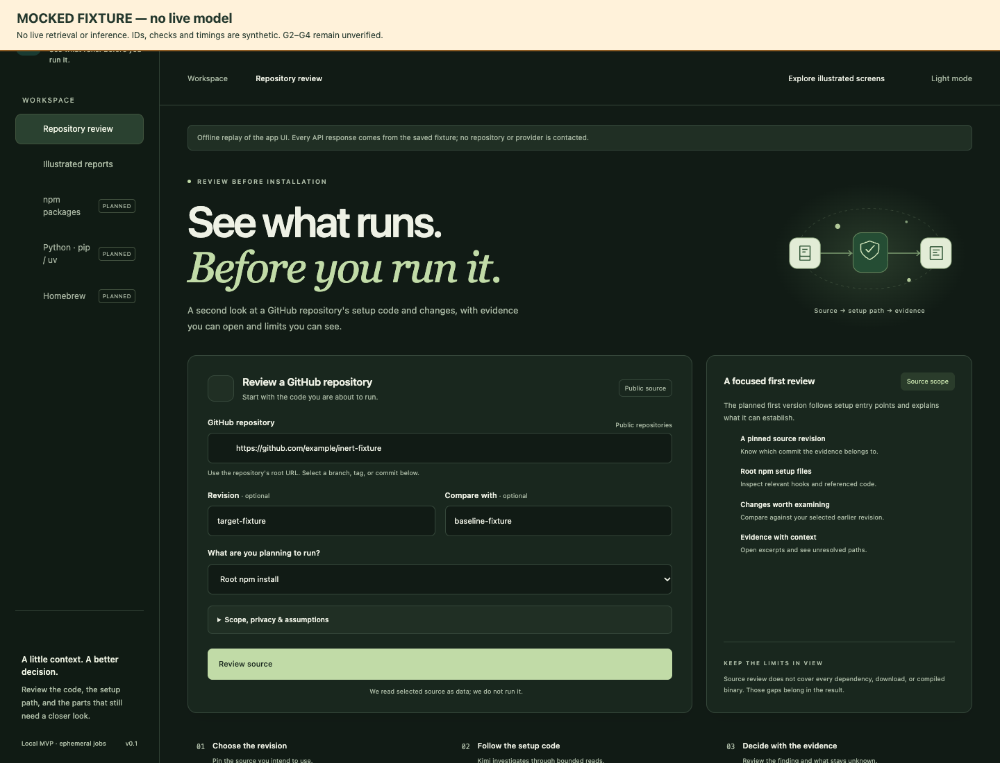

BeforeRun's real interface, replayed with a saved checked-report fixture and mocked APIs.
No GitHub retrieval, OpenClaw/Cerebras inference, submitted-source execution, or malware evaluation occurred.
